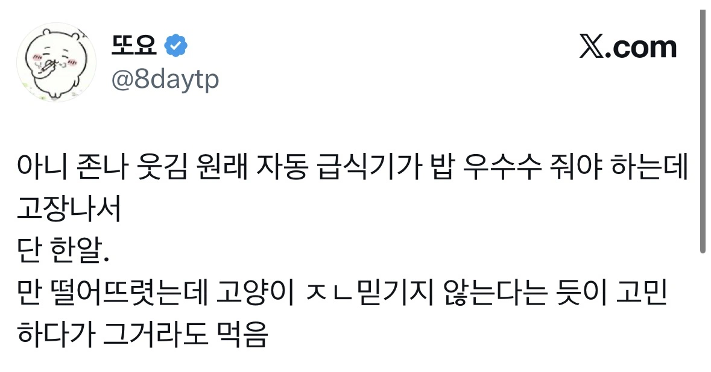

145 · 7 · 13 시간 전 · 원문

수집 당시 댓글 7개
김두루치기 · 10 시간 전
쟤네들한테는 저게 맛있는 음식으로 느껴지는거겠지?
↳ 답글 · 위련 · 37 분 전
기호성 높은게 있긴 한데 내가보기엔 걍 배고픈데 차려진게 없으니 먹는다 느낌이고
츄르같은 특식주면 환장함
↳ 답글 · 모루겠사우르스 · 34 분 전
울집 고양이 새우는 안먹는데 사료는 먹음 근데 또 맛없는사료는 안먹음 사료정도면 맛있는편이라고 느낄수도있음 ㅋㅋ
그뢰이재됬냐 · 10 시간 전
당 떨어졌나 앞발 부들부들 떠네 ㅋㅋㅋ
↳ 답글 · 추억팔이하는놈 · 3 시간 전
언냐들 나 손벌벌떨렸어 ㅜ
작성자존슨 · 10 시간 전
ㅋㅋ 겁나귀엽내 ㅋㅋㅋ
스미티워밴재거맨젠슨 · 9 시간 전
순욱냥이 ㅠㅠㅠㅠ
쟤네들한테는 저게 맛있는 음식으로 느껴지는거겠지?